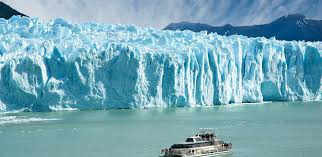
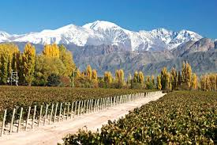
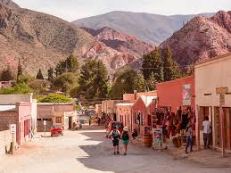
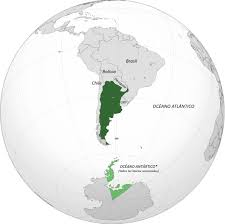

Descripción del País:
Argentina es un país situado en el sur de América del Sur, con costas en el océano Atlántico al este. Limita al oeste con Chile, al norte con Bolivia y Paraguay, y al noreste con Brasil y Uruguay. Su capital es Buenos Aires. Es conocido por su rica cultura, diversidad geográfica y su influencia europea. Argentina tiene una historia profunda con influencias indígenas, coloniales españolas y migraciones europeas, y es famosa por su tango, su literatura con figuras como Jorge Luis Borges, y su vibrante escena artística. Geográficamente, el país cuenta con los Andes, la vasta Pampa, la Patagonia y las Cataratas del Iguazú. La economía argentina es una de las más grandes de América Latina, con sectores clave en la agricultura, la ganadería, la producción de vino, y una creciente industria tecnológica y turística.
5 LUGARES PARA IR DE VACACIONES EN U.S.A.
1. Cataratas del Iguazú
Las Cataratas del Iguazú son una de las maravillas naturales del mundo, conformadas por 275 saltos de agua. Ofrecen espectaculares vistas y actividades como paseos en bote y caminatas por la selva.
2. El Calafate y el Glaciar Perito Moreno
El Calafate es la puerta de entrada al Parque Nacional Los Glaciares, hogar del imponente Glaciar Perito Moreno. Es ideal para caminatas sobre hielo y paseos en barco para ver de cerca el glaciar.
3. Bariloche
San Carlos de Bariloche es famoso por sus paisajes de montañas y lagos, además de sus estaciones de esquí en invierno. También es conocido por su chocolate y sus actividades al aire libre como senderismo y kayak.
4. Mendoza
Mendoza es la región vinícola más importante de Argentina. Ofrece tours de bodegas y viñedos, además de actividades como rafting y trekking en la Cordillera de los Andes.
5. Salta y Jujuy
Esta región es conocida por sus paisajes desérticos, quebradas y montañas coloridas, como la Quebrada de Humahuaca y el Cerro de los Siete Colores en Purmamarca. También puedes explorar la rica cultura y tradiciones andinas.
DATOS CURIOSOS
1. El primer país en emitir transmisiones de radio:
Argentina fue pionera en la radiofonía mundial. En 1920, se realizó la primera transmisión de radio en el mundo desde Buenos Aires, con la emisión de la ópera "Parsifal" de Wagner desde el Teatro Coliseo. Esta transmisión fue llevada a cabo por un grupo de radioaficionados conocido como "Los locos de la azotea".
2. El país de los cinco continentes:
Geográficamente, Argentina abarca territorios en cinco continentes: América del Sur (la mayor parte del país) y la Antártida (territorio reclamado por Argentina), además de tres islas subantárticas en el Océano Atlántico (Georgias del Sur, Sandwich del Sur y las Orcadas del Sur).
3. El origen del primer supermercado del mundo:
El primer supermercado tal como lo conocemos hoy en día, con autoservicio y cajas registradoras, fue inaugurado en Argentina en 1965. Este supermercado, llamado "Supermercados Super Eki", fue un concepto innovador que revolucionó la forma en que las personas compraban alimentos y otros productos.
QUIZ
¡PRUEBA TUS CONOCIMIENTOS DE ARGENTINA!
Gracias por participar.
Tu puntaje fue: